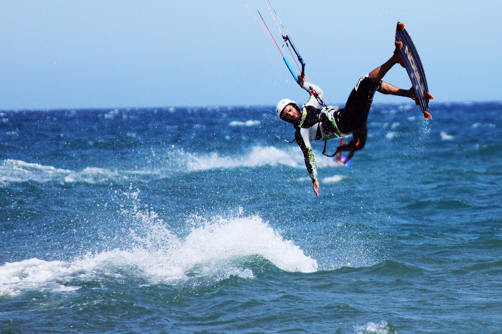
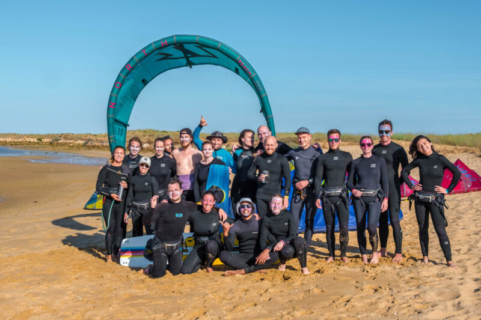
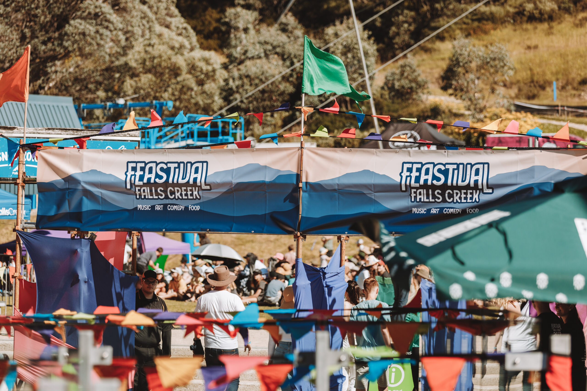
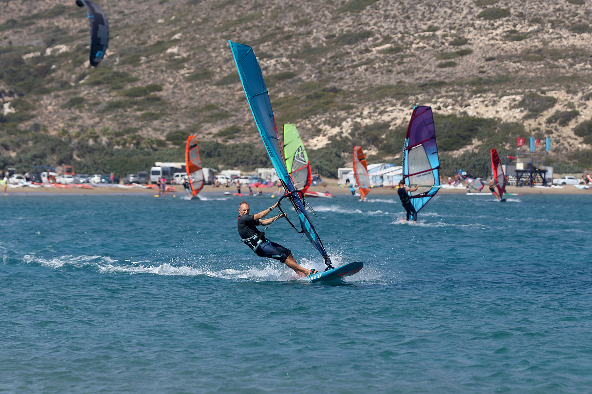

Created by a dam built in the 1990s.
Experince Kitesurfing in Cuesta del Viento

A dam in San Juan province famous for having some of the most consistent high-speed winds in the world.
Cuesta del Viento creates a 'Venturi effect' where wind is squeezed through a narrow canyon, accelerating it to 100 km/h it’s a kitesurfer’s dream lab!
This is "Bernoulli’s Principle" in action. The narrow valley forces a large volume of air through a small space, causing the air to speed up significantly.
What to Expect
Gale-force winds every afternoon and a turquoise lake surrounded by orange desert mountains.
Kitesurfing Lessons & Camps

Because the wind here is famously 'stiff,' schools focus heavily on safety protocols and specialized gear handling.
The 'Beginner to Pro' Pipeline
Advertises 3-day intensive courses that take you from 'kite physics' (learning the wind window) to your first 'water starts' and board rides.
The Kite Camp Experience
Offers full-immersion packages including lakeside accommodation, equipment rental, and evening 'video analysis' to study your posture and tacking angles.
Advanced 'Big Air' Coaching
For the pros, they provide clinics on jump mechanics, exploiting the high-tension winds to achieve record-breaking 'hang time.
Kitefest Argentina

This is the premier event on the calendar, turning the reservoir into a high-stakes arena for the world's best riders.
International Showcases
Often advertised as a 'festival of wind,' it features pro-riders from the Red Bull circuit demonstrating extreme freestyle tricks.
The 'King of the Air' Qualifiers
The spot is so consistent it has hosted qualifiers for the world's most extreme big-air competitions.
Beach Culture
ven for non-riders, the event is pitched as a massive desert party with DJs, food trucks, and a 'young, beachy' vibe in the middle of a rocky wasteland.
Multi-Sport Action

When you aren't fighting the wind on a kite, the advertisements point you toward the other natural forces of the Jachal Valley.
Windsurfing
Long before kitesurfing took over, this was a global windsurfing HQ. You'll find 'Freestyle' and 'Slalom' gear rentals for those who prefer a rigid sail.
Jachal River Rafting
For a change in 'fluid dynamics,' local operators offer white-water rafting trips down the nearby river, navigating through deep rock canyons.
Land-Based Exploration
Advertisements frequently suggest horseback riding and mountain biking across the 'Moon-like' landscape surrounding the water mirror.
Prep-Checklist
Thermal Regulation: The water is cold (meltwater!), but the sun is brutal. Ads will insist on a '3/2mm' or '4/3mm' wetsuit and high-SPF 'zinc' sunblock.
The 'Rodeo' Basecamp: The nearby town of Rodeo is the logistics hub. It's pitched as a 'laid-back, rustic' village where you can find great local meat and cheap camper parking.
Wind Timing: The data shows the wind is 'thermal.' It’s often calm in the morning (perfect for SUP or kayaking) and kicks into 'overdrive' precisely at 1:00 PM.